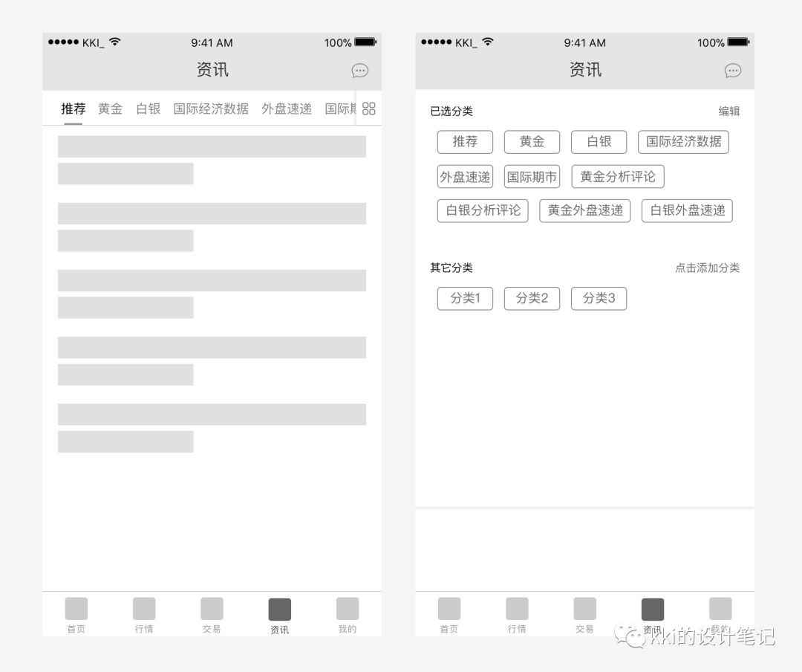
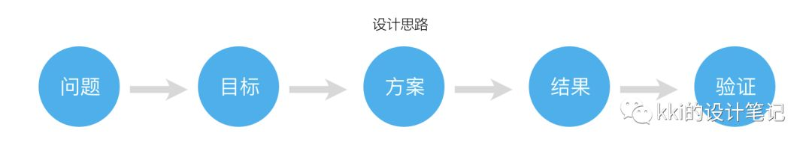

2018-01-31
今天说一个产品优化案例，算是填一个以前挖的坑。优化的对象是“金赢在线2017”。因为文章篇幅较长，故分为上下两篇。
渊源
这款产品是我在16年时经历过的一个项目。
以上几个现实原因导致进行交互设计的时间并不多，再加上当时经验的欠缺；且在完成了和客户的交互设计评审后我就从前公司离职了，后续 的工作交给了另一名新的交互同事，产品的开发过程零参与，导致实际上线的产品和设计方案也有较大差异。
设计经验欠缺，设计过程不连贯，使得上线的产品在体验上大打折扣。
正文
今天填一个坑，对过去的项目做一个回顾。针对产品中的“资讯板块”和“消息板块”具体聊聊如何改进。本文主要讨论“资讯板块”的优化，“消 息板块”留待下文中讨论。
讨论之前想跟大家分享一句之前看到的话：
我们很容易批判或者改进别人的设计，但是只有当你从多方面考虑问题后得出的解决方案才可能是有效的。
因为毕竟我对该产品的开发过程零参与，对开发过程中遇到的实际问题不知情，所以以下的讨论仅仅是我自己从一般的情况下进行的讨论，实 际项目中当然要根据实际情况调整。
拿到一个优化需求，直接就开始进行所谓的“竞品分析”么？拿几款同类产品做比较，然后做加法做减法，拆拆补补就完成需求设计么？
首先我们得弄清产品的现状和问题，针对问题提出设计/优化目标，在明晰目标的前提下进行设计方案的产出。这样才能有的放矢，在后面的设 计时也不至于跑偏。
接下来我将会以“现状/问题→设计目标→解决方案”的思路进行描述。
提高用户获取有用信息的效率，提升用户的浏览体验，增加用户的掌控感。
下面我将按照由主到次的顺序进行方案的阐述。
重新界定资讯概念，是我们做资讯功能的前提。
资讯定义：资讯是用户因为及时地获得它并利用它而能够在相对短的时间内给自己带来价值的信息，资讯有时效性和地域性，它必须被消费者
利用。并且“提供－使用（阅读或利用）－反馈”之间能够形成一个长期稳定的CS链，具有这些特点才可以称之为资讯。
—来自百度百科
结合百科上的定义，我自己理解的资讯是：流动、变化的信息，且有强时效性。
然后我们针对现在资讯下的4个栏目逐一分析，看看他们是否适合放在资讯板块下。
首先，从上面的定义中看，“公告”、“活动”和“学堂”均不符合“流动”、“变化”的特点，这三个栏目的内容在某一个时期内都相对“静止”； 其次，我们结合产品的实际情况，从上线至今，公告栏目共产生3条数据，活动栏目共产生1条数据，而学堂栏目最多，但也仅有5条数据。
所以无论从资讯的定义上看，还是从入口的重要性看，“公告”、“活动”、“学堂”在我看来都不适合放在资讯下。
解决方案：“公告”归入消息板块，“活动”和“学堂”从资讯中移除，另开入口；“新闻”下的细类提升为二级分类，“新闻”分类移除。
现有资讯分类众多，不利于用户快速的获取各分类下的有用信息，增加推荐栏目，可以起到以下两个作用：
我们可以看到大部分资讯类APP都有“推荐”的的栏目，也是基于以上的原因，至于其他运营上的目的，在此不做细说。
但是要说一点，增加“推荐”栏目，看上去好像只是一个分类的问题，但是这涉及到背后的推荐逻辑，是人工推荐还是算法推荐？如果人工推 荐，推荐的依据是什么？如果算法推荐，背后的推荐规则就更为复杂了。这些是我们在设计时都要考虑的。
允许用户对分类进行增删和排序操作。
千人千面，每个用户对于资讯都有自己的偏好和侧重，系统提供的分类和排序只能反映部分用户的偏好。允许用户对分类进行自定义，将自己 感兴趣的分类前置，将自己不关心的分类隐藏，既方便用户快速获取感兴趣的信息，又减少了无关信息的打扰。

上图中的“资讯-全部”中在二级分类栏增加了一个“全部”的button，点击该button，进入“资讯-展开全部”页面，用户在该页面点击编辑， 可对分类进行增删或排序。
我们还可以增加其他交互细节，比如在编辑模式下，将需要常驻的分类禁止删除或拖动。如下图，“推荐”和“黄金”禁止删除或拖动：
或者当用户首次使用编辑功能的时候，对用户的操作进行提示，增加功能的可见性。如下图：
上面的提示还可以有别的形式，大家也可以自己想想。
最后说一句，该条优化方案的是有前置条件的，前置条件大家可以稍后看第5条。
不同的信息类型按照同一种方式展示，对于设计和开发来说确实可以减少很多工作，但是相应的复杂就会转移到用户身上。
『系统多做一点，用户就可以少做一点』。
比如“国际经济数据”细类下单条信息内容很少，而且信息内容以数据展示为主，那么针对该细类下的信息展示，我们就可以区别于其他细类， 特殊处理。

通过将国际经济数据下的信息逐条对比，对每条信息包含的内容进行提炼并归类，最后得出数据类型可进行如下展示：“某国”“某时”“某类 型数据”“具体数据展示”。
所以我们可以在列表页将信息全部展示，无需用户进入详情页才能全览信息。通过合理的排版，既减少了用户的操作，又能够大大提升用 户“扫视”的效率。
这点仅针对分类多的情况，方便用户全览全部细类，快速做出选择。如下图：

这一条似乎和第三条重复了，但并不是的，大家可以自己去想一下。
并且这一点是第3点的前置条件。
以上5点是最为重要的几点优化，主要是从产品和交互层面进行的思考。下面提到的两点，更多的是视觉层面，供参考。
从扫视效率上来说，“图片”优于“图文”优于“纯文本”。
但是具体分析资讯类信息流中的图片，大多以装饰作用为主，相比于纯文本，图文类信息确实提升了用户的浏览体验。但是图片是否会抢夺用户 的注意力？另外，如果图片和内容本身不相符，是否会给用户造成阅读上的干扰？
当我们决定在资讯的信息流中使用图片时，上面两个问题是需要考虑的。
再多说一句： 界面中存在的每一个元素都是有意义的。但是，每一个元素的存在也会对其他元素产生作用，他们或者互相促进，或者互相抵消，而我们要寻 找其中微妙的平衡。
我在之前写的一篇文章《如何确定信息流的展示和操作逻辑 》中提到过，在资讯信息 流中展示“阅读量”、“转发量”、“热度”等用户产生的数据作为其他用户在扫视信息时快速选择的一种依据，减少用户选择的难度。
但是今天重新去琢磨，又有了不一样的想法。
这些数据确实为用户提供了标题以外的另一种判断依据，我们可以把这些数据看做对用户的一种引导，但这种引导一定是积极、高效的吗？ 十万人点赞的信息一定比10个人点赞的信息对用户来说更有用吗？
这种引导看似提升了用户选择的效率，但在某种程度上何尝不是对用户判断力的影响。
说到这，这个问题的讨论已经不仅仅局限于设计层面了，是当下的我所不能解释的。留下这个疑惑，留待来日再论。
资讯板块的优化到这里并没有结束，后续还要经过评审，再优化，开发，上线，验证等。在这里不展开说。

最后做个总结。
优化到了最后，可以看出和市面上的资讯类产品已经很相似了。虽结果如此，但这不是我们的目的。殊途同归，互联网产品经过这几年的发 展，基本都形成了固有的模式，而我们能做的就是结合产品和项目的情况，在一般模式上探索和创新。